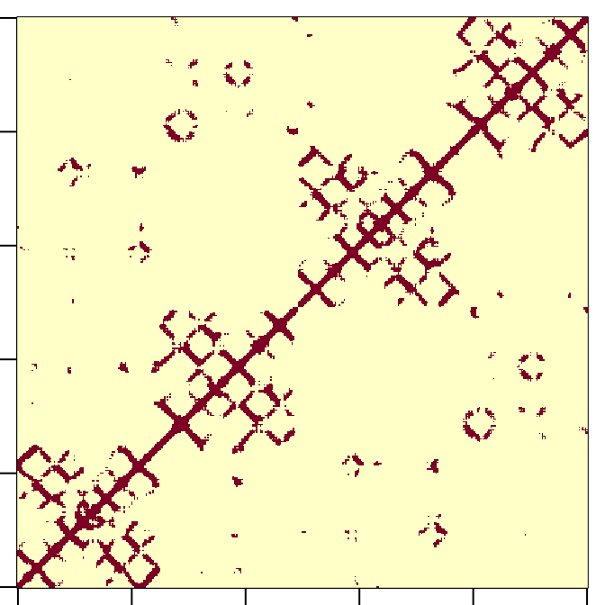
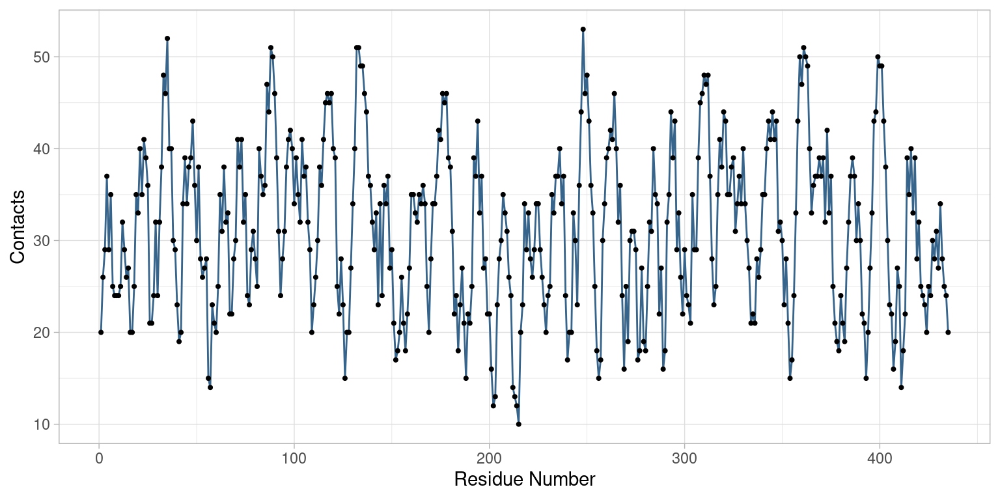
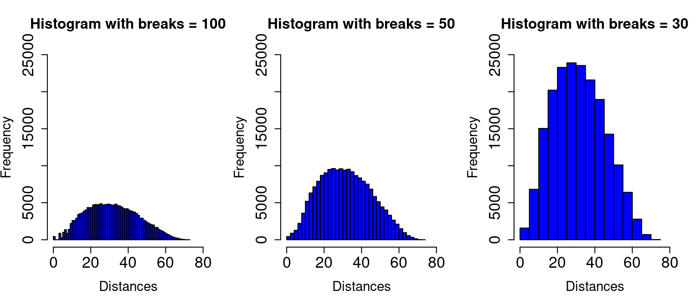

| type | eleno | elety | alt | resid | chain | resno | insert | x | y | z | o | b | segid | elesy | charge |
|---|---|---|---|---|---|---|---|---|---|---|---|---|---|---|---|
| ATOM | 1 | N | NA | ILE | N | 81 | NA | 72.652 | 8.334 | 153.945 | 1 | 50.23 | NA | N | NA |
| ATOM | 2 | CA | NA | ILE | N | 81 | NA | 72.021 | 8.573 | 155.230 | 1 | 47.94 | NA | C | NA |
| ATOM | 3 | C | NA | ILE | N | 81 | NA | 71.384 | 7.213 | 155.534 | 1 | 45.77 | NA | C | NA |
| ATOM | 4 | O | NA | ILE | N | 81 | NA | 71.369 | 6.388 | 154.609 | 1 | 46.15 | NA | O | NA |
| ATOM | 5 | CB | NA | ILE | N | 81 | NA | 71.017 | 9.779 | 155.073 | 1 | 48.24 | NA | C | NA |
| ATOM | 6 | CG1 | NA | ILE | N | 81 | NA | 70.453 | 10.145 | 156.446 | 1 | 49.92 | NA | C | NA |
3 Statistical Data Distributions
To better interpret the data, we need to analyze the data by considering other properties besides the centrality trend and dispersion indices. A widely used approach is to analyze the distribution of data, also to compare data sets with each other. In the following sections this aspect will be discussed.
3.1 Absolute and relative frequencies
In statistics, the frequency of a given event is the number of times the specific event occurred. In this first part of the section, we will distinguish between relative frequency and absolute frequency.
Absolute frequency
The absolute frequency in simply the number of times that a value appears. Therefore, the sum of all absolute frequencies is the total number of data.
\[ f_{1} + f_{2} + f_{3} + … + f_{n} = N \]
In a more compact way:
\[ \sum_{i=1}^n f_i = N \]
Relative frequency
The relative frequency is obtained by dividing the absolute frequencies by the total number of data. Therefore, the sum of all relative frequencies is equal to 1. More formally:
\[ n_i = \frac{f_i}{N} \]
Biological focus: Monoclonal antibody
The monoclonal antibodies are a class of proteins designed in the laboratory in order to be able to bind specific targets. There are many types of monoclonal antibodies, but their common feature is that they can bind only one antigen. Monoclonal antibodies are often used in the diagnosis and treatment of many diseases, including some types of cancer.
As an example, we focus our attention on the monoclonal antibody for the influenza virus. More specifically, the crystal structure of the complex between neuraminidase from influenza virus (subtype N9 and isolated from an avian source) and the antigen-binding fragment (Fab) of monoclonal antibody NC41 has been refined (pdb code: 1NCA).
To better elucidate both the absolute and relative frequency concept, we analyze a specific biological problem. Here, the analysis of the contacts is performed for the case of a specific monoclonal antibody, which has been designed for the neuraminidase from influenza virus (pdb code: 1NCA). To this end, we define two residues in contact if the distance between their c-alpha atoms have a distance less than \(12 Å\).
First of all, it is useful to describe the organization of the pdb file, which contains the information relating to the three-dimensional coordinates (x, y, z) of each atom of the protein.
Below, we report the first rows of the 1nca pdb file corresponding to the first c-alpha atoms of the protein.
For each atom we have a set of information:
type of atom
number of each element
atom name. Each atom in the structure of each residue is named with a specific nomenclature.
amino acid name (for example Ile, Arg, Asp, etc.)
the chain of belonging of each atom
the residue number
the coordinates of each atom (x, y and z)
B-factor
type of atom, for example: C, N, O etc.

image function of R, we report the contact matrix of the antibody present in the 1nca pdb file. Each pair of residue are in contact if the distance between their c-alpha atoms have a distance lower then a certain threshold.In Figure 3.1 the residue-residue contact matrix for the antibody of the 1nca pdb is reported.
In order to visualize the number of contacts of each residue, we report a plot where the residue number and the number of contacts are reported in the x-axis and y-axis, respectively. Interestingly, by analyzing the Figure Figure 3.2 is possible to note regions of the protein with a high number of contacts and regions with low number of contacts.

In fact, this analysis allow us to analyze some structural properties of the protein fold: regions with a higher number of contacts are located in the core of the protein, while regions with fewer contacts are populated by residues exposed to the solvent.
The purpose of this analysis is to analyze the absolute and relative frequencies of the number of contacts that each residue has with all its closest residues.
Therefore, we calculate the number of residues that gave \(n\) contacts, where \(n\) ranges from 0 to the maximum number of contacts that a residue can make in this specific protein. We increase the value of \(n\) by adding 1 contacts to each step of the procedure. In the following table we report the absolute frequencies, i.e. how many residues have 0 contacts, how many residues have 1 contact, how many residues have 2 contacts, and so on.
| 10 | 12 | 13 | 14 | 15 | 16 | 17 | 18 | 19 | 20 | 21 | 22 | 23 | 24 | 25 | 26 | 27 | 28 | 29 | 30 |
|---|---|---|---|---|---|---|---|---|---|---|---|---|---|---|---|---|---|---|---|
| 1 | 2 | 2 | 3 | 6 | 4 | 5 | 9 | 6 | 17 | 14 | 14 | 16 | 19 | 18 | 10 | 14 | 16 | 17 | 14 |
| 31 | 32 | 33 | 34 | 35 | 36 | 37 | 38 | 39 | 40 | 41 | 42 | 43 | 44 | 45 | 46 | 47 | 48 | 49 | 50 | 51 | 52 | 53 |
|---|---|---|---|---|---|---|---|---|---|---|---|---|---|---|---|---|---|---|---|---|---|---|
| 12 | 16 | 16 | 21 | 21 | 11 | 19 | 12 | 17 | 15 | 11 | 4 | 10 | 7 | 4 | 10 | 3 | 4 | 5 | 4 | 4 | 1 | 1 |
For both tables the second row is “how many residues” and the first row is “have n contacts”. For example, we observe that there 19 residue interacting with 8 residues, as well as, there is 1 residue interacting with 44 residues. As described above, we calculate the relative frequency by dividing each element of absolute frequency by the total number of contacts.
| 10 | 12 | 13 | 14 | 15 | 16 | 17 | 18 | 19 | 20 | 21 | 22 | 23 | 24 | 25 |
|---|---|---|---|---|---|---|---|---|---|---|---|---|---|---|
| 0.0023 | 0.0046 | 0.0046 | 0.0069 | 0.0138 | 0.0092 | 0.0115 | 0.0207 | 0.0138 | 0.0391 | 0.0322 | 0.0322 | 0.0368 | 0.0437 | 0.0414 |
| 26 | 27 | 28 | 29 | 30 | 31 | 32 | 33 | 34 | 35 | 36 | 37 | 38 | 39 | 40 |
|---|---|---|---|---|---|---|---|---|---|---|---|---|---|---|
| 0.023 | 0.0322 | 0.0368 | 0.0391 | 0.0322 | 0.0276 | 0.0368 | 0.0368 | 0.0483 | 0.0483 | 0.0253 | 0.0437 | 0.0276 | 0.0391 | 0.0345 |
| 41 | 42 | 43 | 44 | 45 | 46 | 47 | 48 | 49 | 50 | 51 | 52 | 53 |
|---|---|---|---|---|---|---|---|---|---|---|---|---|
| 0.0253 | 0.0092 | 0.023 | 0.0161 | 0.0092 | 0.023 | 0.0069 | 0.0092 | 0.0115 | 0.0092 | 0.0092 | 0.0023 | 0.0023 |
# In the following R code, both absolute and relative frequencies
# of residue contacts are calculated
library(bio3d)
pdb_aus <- read.pdb("1nca")
df_coord <- pdb_aus$atom
# setting parameters
cutoff <- 12
# atibody atom selection
df_coord_Ab <- df_coord[df_coord$chain == "H" | df_coord$chain == "L",]
# Selecting only c-alpha atoms
df_coord_ca <- df_coord_Ab[df_coord_Ab$elety=="CA",]
df_coord_ca_xyz <- df_coord_ca[,c("x","y","z")]
head(df_coord_ca)
# contacts matrix definition
DistMat <- as.matrix(dist(df_coord_ca_xyz))
DistMat_Bin <- DistMat
DistMat_Bin[DistMat_Bin <= cutoff] <- 1
DistMat_Bin[DistMat_Bin > cutoff] <- 0
image(DistMat_Bin)
# using the matrix for residue-residue pairs analysis.
# in this case we need to remove the redundant information
# due to symmetry properties of the distance matrix.
DistMat_Bin_NoSym <- DistMat_Bin
DistMat_Bin_NoSym[lower.tri(DistMat_Bin_NoSym, diag = FALSE)] <- 0
diag(DistMat_Bin_NoSym) <- 0
image(DistMat_Bin_NoSym)
# On the contrary, for analysis conctacts of each node:
# conctacts vector
contacts <- colSums(DistMat_Bin)
# plot
plot(
contacts, pch=20, cex=1.2,
xlab="Residue number", ylab="Number of contacts",
cex.lab=1.4, cex.axis=1.4, col="black"
)
lines(contacts, col="blue", lwd=1.4)
# absolute frequencies
absF <- table(contacts)
# relative frequencies
relF <- round(table(contacts)/sum(table(contacts)),4)
sum(relF)
# How to use ggplot
library(ggplot2)
df_ggplot <- data.frame(
ResNum = 1:length(contacts),
cont = contacts
)
ggplot(df_ggplot, aes(x = ResNum, y = cont)) +
geom_line() +
theme_light() +
scale_color_manual(values = c("steelblue")) +
labs(x = "Residue Number", y = "Contacts")3.2 Histograms
In statistics, data is often represented using a histogram, which is constructed by dividing the data into a number of different intervals for each of which the number of the items is reported. Therefore, for each interval (or class) of data we associate the relative (or absolute) frequency, which corresponds to the area of the specific rectangle.
Compared to the mean and variation calculation, the histogram provides a lot of additional information about the nature of the data. Indeed, by analyzing the shape of the distribution we can better investigate the properties of the data.
To construct a histogram from a continuous variable we need to split the data into intervals, called bins, and count the number of times that an event occur for each bin.
In order to understand the histogram definition also through an concrete application, we consider the following problem: To better describe the structural properties of a protein, may be useful to analyze the distribution of distances between a residue and any other. Therefore, according to the previous R script, the histogram of the distances can be obtained using hist function of R. In particular, as shown in Figure 3.3, each histogram can be obtained with different resolution. Indeed, changing the size of the bins we have a different count of items belonging to the given bin, meaning that the shape of the histogram can change according to the chosen bin size. The idea is that the two extreme situations (bins too large and bins too small) do not lead to useful information. In fact, if the size of the bins tends to zero, most of the bins are “empty” (no associated items). On the contrary, when the size of the bins tends to the maximum variation of the data set, all items belong to the single bin of the histogram. Both conditions are not informative. Therefore, the ideal condition is one that lives in the middle, allowing us to observe the shape of the histogram (which suggest us how the data is distributed). In Figure 3.3 are reported three cases that give us information about data distribution. In particular, for the three cases the breaks argument of hist function of R has changed. Defining the number of breaks, in fact, is one of the most important precautions in this type of analysis. Using the breaks argument it is possible to specify the number of cells we want in the histogram. Note that this number is only indicative for the R algorithm (it is only a suggestion), since R calculates the best number of bins for histogram definition, keeping however the information about the number of bins provided by the user.

In the following R script we report a typical approach for histogram calculation.
# In the following R code, the histrogram procedure is shown
library(bio3d)
pdb_aus <- read.pdb("1nca")
df_coord <- pdb_aus$atom
# setting parameters
cutoff <- 12
# atibody atom selection
df_coord_Ab <- df_coord[df_coord$chain == "H" | df_coord$chain == "L",]
# Selecting only c-alpha atoms
df_coord_ca <- df_coord_Ab[df_coord_Ab$elety=="CA",]
df_coord_ca_xyz <- df_coord_ca[,c("x","y","z")]
head(df_coord_ca)
# contacts matrix definition
DistMat <- as.matrix(dist(df_coord_ca_xyz))
par(mfrow=c(1,3))
hist(DistMat, col="blue", ylim = c(0,25000), xlim=c(0,80), breaks=100, main="Histogram with breaks = 100",
cex.lab=1.4, cex.axis=1.6, cex.main=2, xlab="Distances")
hist(DistMat, col="blue", ylim = c(0,25000), xlim=c(0,80), breaks=50, main="Histogram with breaks = 50",
cex.lab=1.4, cex.axis=1.6, cex.main=2, xlab="Distances")
hist(DistMat, col="blue", ylim = c(0,25000), xlim=c(0,80), breaks=20, main="Histogram with breaks = 30",
cex.lab=1.4, cex.axis=1.6, cex.main=2, xlab="Distances")
DistMat_vet <- as.vector(DistMat)
DistMat_vet_red <- sample(DistMat_vet,1000)
h <- hist(DistMat_vet_red,ylim = c(0,50), xlim=c(0,80), breaks=100)
text(h$mids,h$counts,labels=h$counts, adj=c(0.5, -0.5))3.2.1 Interpretation of the histogram
One of the main purpose of these notes is to provide knowledge that allow us to interpret the nature of data through specific analysis. As mentioned before, the shape of an histogram is an important element for discuss about data distribution. For example, looking at Figure 3.3, we note that the shape of the distribution is not symmetric. The right tail of the histogram is more elongated than the left tail. Is there a reason for this asymmetry? Obviously yes. First of all, it is not possible to have a more elongated tail in the left part of the distribution because it is not possible to have distance between two atoms less then zero (since distance is a positive definite quantity). Therefore, there are more long-distance interactions than short-distance interactions. In general, the pairs of atoms (o residues) with the most frequent distance values are in the central part of the histogram, between \(25 Å\) and \(35 Å\). The most important effect of the data asimmetry is the following: the mean does not correspond with the mode (i.e. the value with the highest frequency), since the tail on the right helps to shift the mean in such direction.
Test
Analysis of residue-residue interactions at the interface. In particular, taking into account a antibody-antigen complex (such as the pdb code: 3HFM), we would calculate:
An histogram of all \(C_{\alpha}-C_{\alpha}\) distances, just considering the intermolecular interactions. For this analysis we consider a contact between two residues only if the distance between their \(C_{\alpha}\) atoms is less than \(12 Å\).
Calculate the histogram of all interatomic distances increasing step by step the average hydrophobicity according to the Kyte Doolittle hydrophobicity scale.